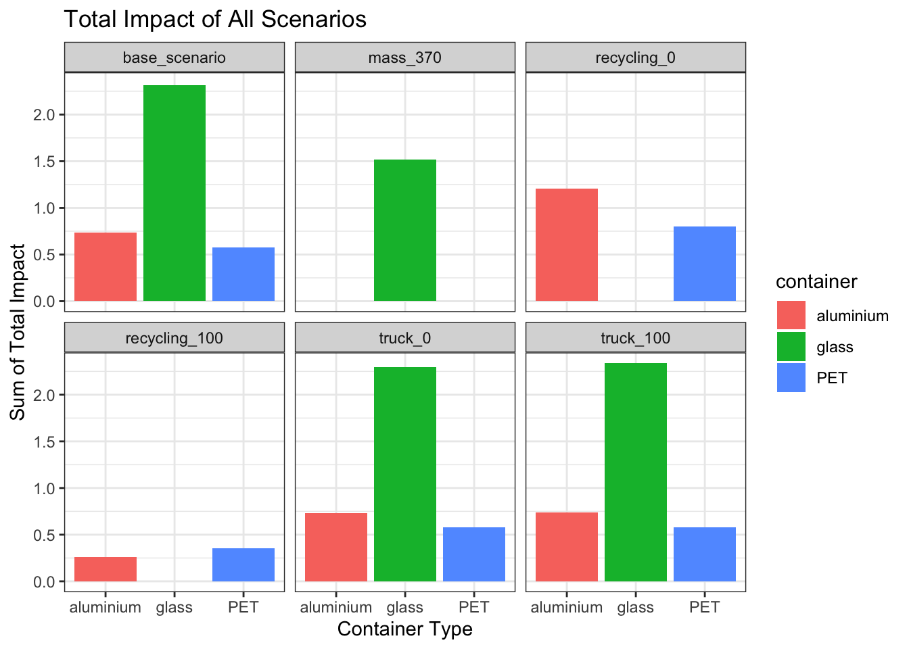
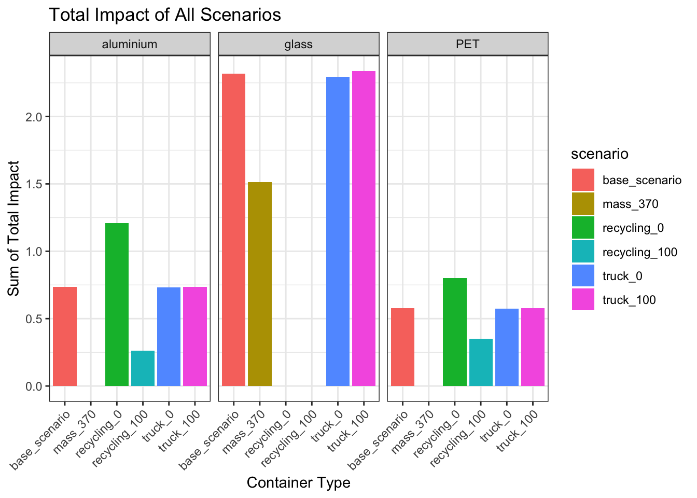
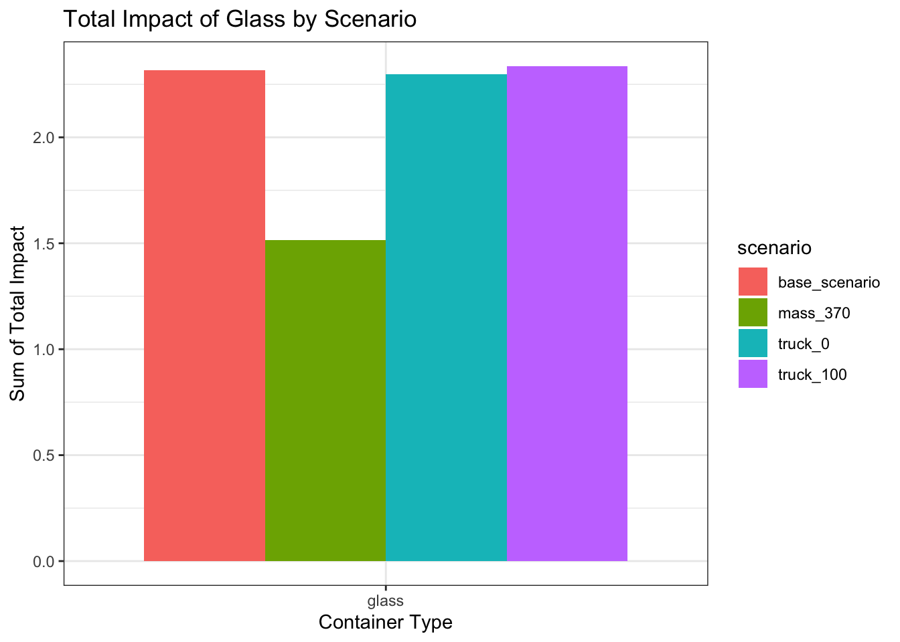
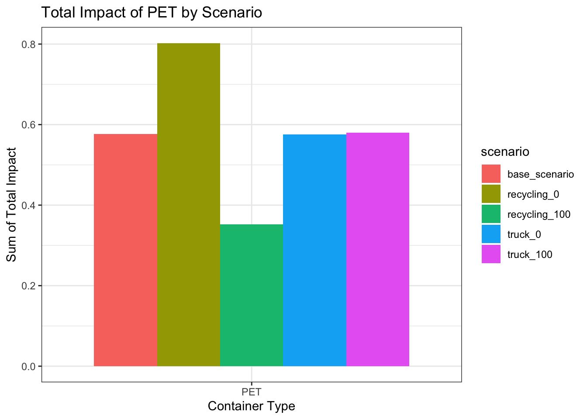
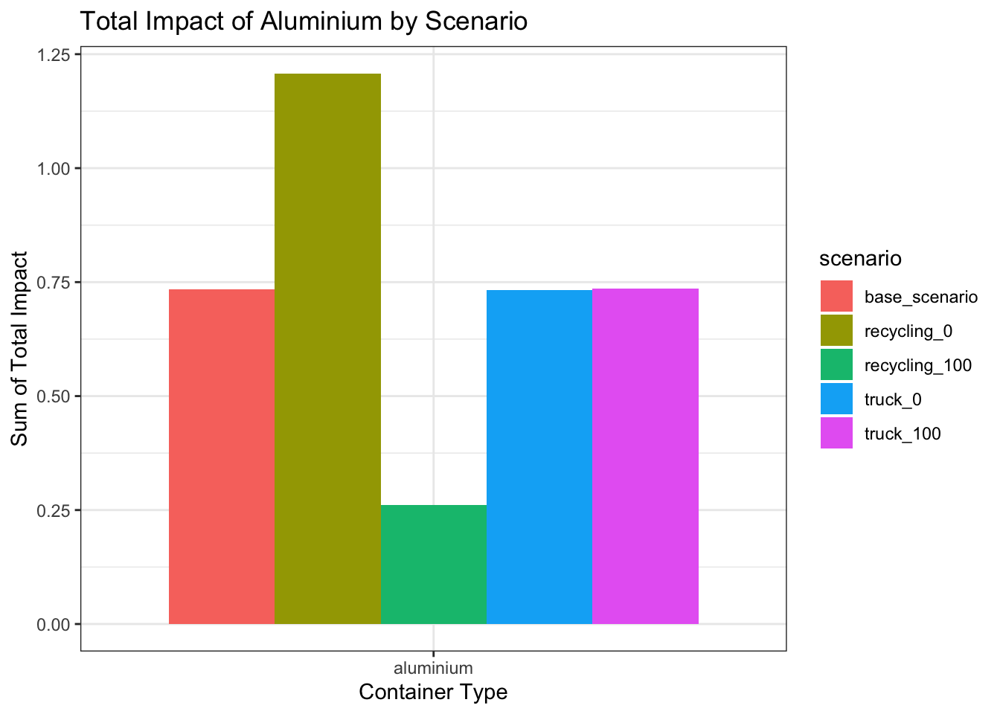

library(tidyverse)
library(googlesheets4)
library(janitor)ESM 273: LCA Final - data cleaning
Data wrangling for Container LCA
Set up
Connect to google sheets
# authenticate with google sheets
# gs4_auth()
# set up URL
source("R/url.R")
# pull in aluminium data
aluminium_sheet <- read_sheet(sheet_id, sheet = "Aluminium") %>%
clean_names()
glass_sheet <- read_sheet(sheet_id, sheet = "GlassBottle") %>%
clean_names()
PET_sheet <- read_sheet(sheet_id, sheet = "PET_Bottle") %>%
clean_names()Aluminum container wrangling
# function for wrangling aluminium scenario
process_aluminum_scenario <- function(data_sheet, row_range, scenario_name) {
data_sheet %>%
slice(row_range) %>%
select(x4:x20) %>%
mutate(row_id = row_number()) %>%
mutate(across(x4:x20,
~if_else(row_id == 1 & . == "NULL",
"Total_Impact", as.character(.)))) %>%
select(-row_id) %>%
{
df <- .
colnames(df) <- as.character(unlist(df[1, ]))
df[-1, ]
} %>%
janitor::clean_names(allow_dupes = FALSE) %>%
rename(impact_category = 1) %>%
pivot_longer(
cols = -impact_category,
names_to = "process",
values_to = "value"
) %>%
filter(!is.na(value)) %>%
mutate(
value = as.numeric(str_replace_all(value, "NULL", NA_character_))
) %>%
separate(impact_category,
into = c("impact_method", "impact_type", "unit"),
sep = ", |\\[|\\]",
fill = "right") %>%
mutate(
unit = str_trim(unit),
unit = str_remove(unit, "\\]$")
) %>%
mutate(scenario = scenario_name, ,
container = "aluminium")
}
# pull in aluminium data
aluminium_sheet <- read_sheet(sheet_id, sheet = "Aluminium") %>%
clean_names()
# process each scenario
alum_base_scen <- process_aluminum_scenario(aluminium_sheet, 3:14, "base_scenario")
alum_truck0 <- process_aluminum_scenario(aluminium_sheet, 35:46, "truck_0")
alum_truck100 <- process_aluminum_scenario(aluminium_sheet, 67:78, "truck_100")
alum_recycling0 <- process_aluminum_scenario(aluminium_sheet, 98:109, "recycling_0")
alum_recycling100 <- process_aluminum_scenario(aluminium_sheet, 130:141, "recycling_100")
# combine scenarios
alum_clean <- rbind(alum_base_scen,
alum_truck0,
alum_truck100,
alum_recycling0,
alum_recycling100)
# remove intermediate df
rm(alum_base_scen, alum_truck0, alum_truck100, alum_recycling0, alum_recycling100)Glass container wrangling
# function to process glass data for different scenarios
process_glass_data <- function(glass_sheet, row_range, scenario_name) {
glass_sheet %>%
slice(row_range) %>%
select(x4:x19) %>%
mutate(row_id = row_number()) %>%
mutate(across(x4:x19,
~if_else(row_id == 1 & . == "NULL",
"Total_Impact", as.character(.)))) %>%
select(-row_id) %>%
{
df <- .
colnames(df) <- as.character(unlist(df[1, ]))
df[-1, ]
} %>%
janitor::clean_names(allow_dupes = FALSE) %>%
rename(impact_category = 1) %>%
pivot_longer(
cols = -impact_category,
names_to = "process",
values_to = "value"
) %>%
filter(!is.na(value)) %>%
mutate(
value = as.numeric(str_replace_all(value, "NULL", NA_character_))
) %>%
separate(impact_category,
into = c("impact_method", "impact_type", "unit"),
sep = ", |\\[|\\]",
fill = "right") %>%
mutate(
unit = str_trim(unit),
unit = str_remove(unit, "\\]$")
) %>%
mutate(scenario = scenario_name,
container = "glass")
}
# Use the function to process each scenario
glass_base_scen <- process_glass_data(glass_sheet, 4:15, "base_scenario")
glass_truck0 <- process_glass_data(glass_sheet, 36:47,
"truck_0")
glass_truck100 <- process_glass_data(glass_sheet, 74:85,
"truck_100")
glass_mass_370 <- process_glass_data(glass_sheet, 110:121,
"mass_370")
# combine
glass_clean <- rbind(
glass_base_scen,
glass_truck0,
glass_truck100,
glass_mass_370
)
rm(glass_base_scen,glass_truck0, glass_truck100, glass_mass_370)PET bottle wrangling
# function to process glass data for different scenarios
process_PET_data <- function(PET_sheet, row_range, scenario_name) {
PET_sheet %>%
slice(row_range) %>%
select(`absolute_value`:x21) %>%
mutate(row_id = row_number()) %>%
mutate(
absolute_value = if_else(row_id == 1,
"impact_category",
as.character(absolute_value)),
x2 = if_else(row_id == 1,
"total_impact",
as.character(x2))) %>%
select(-row_id) %>%
{
df <- .
colnames(df) <- as.character(unlist(df[1, ]))
df[-1, ]
} %>%
janitor::clean_names(allow_dupes = FALSE) %>%
mutate(across(everything(), ~if(is.list(.x)) as.character(.x) else .x)) %>%
pivot_longer(
cols = -`impact_category`,
names_to = "process",
values_to = "value"
) %>%
filter(!is.na(value)) %>%
mutate(
value = as.numeric(str_replace_all(value, "NULL", NA_character_))
) %>%
separate(impact_category,
into = c("impact_method", "impact_type", "unit"),
sep = ", |\\[|\\]",
fill = "right") %>%
mutate(
unit = str_trim(unit),
unit = str_remove(unit, "\\]$")
) %>%
mutate(scenario = scenario_name,
container = "PET")
}
# Use the function to process each scenario
PET_base_scen <- process_PET_data(PET_sheet, 2:13, "base_scenario")
PET_truck0 <- process_PET_data(PET_sheet, 34:45,
"truck_0")
PET_truck100 <- process_PET_data(PET_sheet, 51:62,
"truck_100")
PET_recycling0 <- process_PET_data(PET_sheet, 68:79,
"recycling_0")
PET_recycling100 <- process_PET_data(PET_sheet, 84:95,
"recycling_100")
# combine
PET_clean <- rbind(
PET_base_scen,
PET_truck0,
PET_truck100,
PET_recycling0,
PET_recycling100
)
# remove intermediates
rm(PET_base_scen,
PET_truck0,
PET_truck100,
PET_recycling0,
PET_recycling100)Combining containers
all_containers <- rbind(alum_clean,
glass_clean,
PET_clean) %>%
select(container, scenario, impact_method, impact_type, unit, process, value)Save data
write_csv(all_containers, "data/all_containers.csv")Exploratory Analysis
library(tidyverse)
library(here)
library(gt)containers <- read_csv(here("data/all_containers.csv"))containers %>%
group_by(container, scenario) %>%
filter(process == 'total_impact') %>%
select(container, scenario, impact_type, unit, process, value) %>%
gt() | impact_type | unit | process | value |
|---|---|---|---|
| aluminium - base_scenario | |||
| Acidification | kg SO2 eq. | total_impact | 9.61000e-04 |
| Ecotoxicity (recommended) | CTUe | total_impact | 5.12000e-03 |
| Eutrophication | kg N eq. | total_impact | 3.10000e-05 |
| Global Warming Air | excl. biogenic carbon | total_impact | 2.27000e-01 |
| Global Warming Air | incl. biogenic carbon | total_impact | 2.27000e-01 |
| Human Health Particulate Air | kg PM2.5 eq. | total_impact | 8.59000e-05 |
| Human toxicity | cancer (recommended) | total_impact | 9.04000e-11 |
| Human toxicity | non-canc. (recommended) | total_impact | 7.92000e-09 |
| Ozone Depletion Air | kg CFC 11 eq. | total_impact | 3.24000e-12 |
| Resources | Fossil fuels | total_impact | 2.62000e-01 |
| Smog Air | kg O3 eq. | total_impact | 1.18299e-02 |
| aluminium - truck_0 | |||
| Acidification | kg SO2 eq. | total_impact | 9.61000e-04 |
| Ecotoxicity (recommended) | CTUe | total_impact | 5.08000e-03 |
| Eutrophication | kg N eq. | total_impact | 3.10000e-05 |
| Global Warming Air | excl. biogenic carbon | total_impact | 2.27000e-01 |
| Global Warming Air | incl. biogenic carbon | total_impact | 2.27000e-01 |
| Human Health Particulate Air | kg PM2.5 eq. | total_impact | 8.59000e-05 |
| Human toxicity | cancer (recommended) | total_impact | 9.02000e-11 |
| Human toxicity | non-canc. (recommended) | total_impact | 7.91000e-09 |
| Ozone Depletion Air | kg CFC 11 eq. | total_impact | 3.24000e-12 |
| Resources | Fossil fuels | total_impact | 2.61000e-01 |
| Smog Air | kg O3 eq. | total_impact | 1.19000e-02 |
| aluminium - truck_100 | |||
| Acidification | kg SO2 eq. | total_impact | 9.61000e-04 |
| Ecotoxicity (recommended) | CTUe | total_impact | 5.16000e-03 |
| Eutrophication | kg N eq. | total_impact | 3.11000e-05 |
| Global Warming Air | excl. biogenic carbon | total_impact | 2.28000e-01 |
| Global Warming Air | incl. biogenic carbon | total_impact | 2.27000e-01 |
| Human Health Particulate Air | kg PM2.5 eq. | total_impact | 8.58000e-05 |
| Human toxicity | cancer (recommended) | total_impact | 9.06000e-11 |
| Human toxicity | non-canc. (recommended) | total_impact | 7.94000e-09 |
| Ozone Depletion Air | kg CFC 11 eq. | total_impact | 3.24000e-12 |
| Resources | Fossil fuels | total_impact | 2.62000e-01 |
| Smog Air | kg O3 eq. | total_impact | 1.18000e-02 |
| aluminium - recycling_0 | |||
| Acidification | kg SO2 eq. | total_impact | 1.72000e-03 |
| Ecotoxicity (recommended) | CTUe | total_impact | 8.46000e-03 |
| Eutrophication | kg N eq. | total_impact | 5.04000e-05 |
| Global Warming Air | excl. biogenic carbon | total_impact | 3.82000e-01 |
| Global Warming Air | incl. biogenic carbon | total_impact | 3.82000e-01 |
| Human Health Particulate Air | kg PM2.5 eq. | total_impact | 1.59000e-04 |
| Human toxicity | cancer (recommended) | total_impact | 1.60000e-10 |
| Human toxicity | non-canc. (recommended) | total_impact | 1.46000e-08 |
| Ozone Depletion Air | kg CFC 11 eq. | total_impact | 5.52000e-12 |
| Resources | Fossil fuels | total_impact | 4.13000e-01 |
| Smog Air | kg O3 eq. | total_impact | 2.02000e-02 |
| aluminium - recycling_100 | |||
| Acidification | kg SO2 eq. | total_impact | 2.02000e-04 |
| Ecotoxicity (recommended) | CTUe | total_impact | 1.79000e-03 |
| Eutrophication | kg N eq. | total_impact | 1.16000e-05 |
| Global Warming Air | excl. biogenic carbon | total_impact | 7.24000e-02 |
| Global Warming Air | incl. biogenic carbon | total_impact | 7.19000e-02 |
| Human Health Particulate Air | kg PM2.5 eq. | total_impact | 1.31000e-05 |
| Human toxicity | cancer (recommended) | total_impact | 2.10000e-11 |
| Human toxicity | non-canc. (recommended) | total_impact | 1.22000e-09 |
| Ozone Depletion Air | kg CFC 11 eq. | total_impact | 9.66000e-13 |
| Resources | Fossil fuels | total_impact | 1.11000e-01 |
| Smog Air | kg O3 eq. | total_impact | 3.48000e-03 |
| glass - base_scenario | |||
| Acidification | kg SO2 eq. | total_impact | 3.27000e-03 |
| Ecotoxicity (recommended) | CTUe | total_impact | 1.87000e-02 |
| Eutrophication | kg N eq. | total_impact | 1.76000e-04 |
| Global Warming Air | excl. biogenic carbon | total_impact | 5.93000e-01 |
| Global Warming Air | incl. biogenic carbon | total_impact | 5.92000e-01 |
| Human Health Particulate Air | kg PM2.5 eq. | total_impact | 1.27000e-04 |
| Human toxicity | cancer (recommended) | total_impact | 3.00000e-10 |
| Human toxicity | non-canc. (recommended) | total_impact | 3.17000e-08 |
| Ozone Depletion Air | kg CFC 11 eq. | total_impact | 2.12000e-15 |
| Resources | Fossil fuels | total_impact | 1.06000e+00 |
| Smog Air | kg O3 eq. | total_impact | 4.95000e-02 |
| glass - truck_0 | |||
| Acidification | kg SO2 eq. | total_impact | 3.27000e-03 |
| Ecotoxicity (recommended) | CTUe | total_impact | 1.81000e-02 |
| Eutrophication | kg N eq. | total_impact | 1.75000e-04 |
| Global Warming Air | excl. biogenic carbon | total_impact | 5.88000e-01 |
| Global Warming Air | incl. biogenic carbon | total_impact | 5.87000e-01 |
| Human Health Particulate Air | kg PM2.5 eq. | total_impact | 1.28000e-04 |
| Human toxicity | cancer (recommended) | total_impact | 2.97000e-10 |
| Human toxicity | non-canc. (recommended) | total_impact | 3.15000e-08 |
| Ozone Depletion Air | kg CFC 11 eq. | total_impact | 2.12000e-15 |
| Resources | Fossil fuels | total_impact | 1.05000e+00 |
| Smog Air | kg O3 eq. | total_impact | 4.99000e-02 |
| glass - truck_100 | |||
| Acidification | kg SO2 eq. | total_impact | 3.27000e-03 |
| Ecotoxicity (recommended) | CTUe | total_impact | 1.94000e-02 |
| Eutrophication | kg N eq. | total_impact | 1.77000e-04 |
| Global Warming Air | excl. biogenic carbon | total_impact | 5.97000e-01 |
| Global Warming Air | incl. biogenic carbon | total_impact | 5.97000e-01 |
| Human Health Particulate Air | kg PM2.5 eq. | total_impact | 1.27000e-04 |
| Human toxicity | cancer (recommended) | total_impact | 3.03000e-10 |
| Human toxicity | non-canc. (recommended) | total_impact | 3.19000e-08 |
| Ozone Depletion Air | kg CFC 11 eq. | total_impact | 2.12000e-15 |
| Resources | Fossil fuels | total_impact | 1.07000e+00 |
| Smog Air | kg O3 eq. | total_impact | 4.92000e-02 |
| glass - mass_370 | |||
| Acidification | kg SO2 eq. | total_impact | 2.14000e-03 |
| Ecotoxicity (recommended) | CTUe | total_impact | 1.26000e-02 |
| Eutrophication | kg N eq. | total_impact | 1.15000e-04 |
| Global Warming Air | excl. biogenic carbon | total_impact | 3.90000e-01 |
| Global Warming Air | incl. biogenic carbon | total_impact | 3.90000e-01 |
| Human Health Particulate Air | kg PM2.5 eq. | total_impact | 8.40000e-05 |
| Human toxicity | cancer (recommended) | total_impact | 1.96000e-10 |
| Human toxicity | non-canc. (recommended) | total_impact | 2.08000e-08 |
| Ozone Depletion Air | kg CFC 11 eq. | total_impact | 1.38000e-15 |
| Resources | Fossil fuels | total_impact | 6.88000e-01 |
| Smog Air | kg O3 eq. | total_impact | 3.24000e-02 |
| PET - base_scenario | |||
| Acidification | kg SO2 eq. | total_impact | 2.99000e-04 |
| Ecotoxicity (recommended) | CTUe | total_impact | 5.08000e-02 |
| Eutrophication | kg N eq. | total_impact | 5.58000e-05 |
| Global Warming Air | excl. biogenic carbon | total_impact | 1.11000e-01 |
| Global Warming Air | incl. biogenic carbon | total_impact | 1.11000e-01 |
| Human Health Particulate Air | kg PM2.5 eq. | total_impact | 1.61000e-05 |
| Human toxicity | cancer (recommended) | total_impact | 1.41000e-10 |
| Human toxicity | non-canc. (recommended) | total_impact | 5.21000e-09 |
| Ozone Depletion Air | kg CFC 11 eq. | total_impact | 3.31000e-07 |
| Resources | Fossil fuels | total_impact | 2.99000e-01 |
| Smog Air | kg O3 eq. | total_impact | 4.43000e-03 |
| PET - truck_0 | |||
| Acidification | kg SO2 eq. | total_impact | 2.99000e-04 |
| Ecotoxicity (recommended) | CTUe | total_impact | 5.08000e-02 |
| Eutrophication | kg N eq. | total_impact | 5.58000e-05 |
| Global Warming Air | excl. biogenic carbon | total_impact | 1.11000e-01 |
| Global Warming Air | incl. biogenic carbon | total_impact | 1.11000e-01 |
| Human Health Particulate Air | kg PM2.5 eq. | total_impact | 1.62000e-05 |
| Human toxicity | cancer (recommended) | total_impact | 1.40000e-10 |
| Human toxicity | non-canc. (recommended) | total_impact | 5.19000e-09 |
| Ozone Depletion Air | kg CFC 11 eq. | total_impact | 3.31000e-07 |
| Resources | Fossil fuels | total_impact | 2.98000e-01 |
| Smog Air | kg O3 eq. | total_impact | 4.46000e-03 |
| PET - truck_100 | |||
| Acidification | kg SO2 eq. | total_impact | 2.99000e-04 |
| Ecotoxicity (recommended) | CTUe | total_impact | 5.09000e-02 |
| Eutrophication | kg N eq. | total_impact | 5.59000e-05 |
| Global Warming Air | excl. biogenic carbon | total_impact | 1.12000e-01 |
| Global Warming Air | incl. biogenic carbon | total_impact | 1.12000e-01 |
| Human Health Particulate Air | kg PM2.5 eq. | total_impact | 1.61000e-05 |
| Human toxicity | cancer (recommended) | total_impact | 1.41000e-10 |
| Human toxicity | non-canc. (recommended) | total_impact | 5.22000e-09 |
| Ozone Depletion Air | kg CFC 11 eq. | total_impact | 3.31000e-07 |
| Resources | Fossil fuels | total_impact | 3.00000e-01 |
| Smog Air | kg O3 eq. | total_impact | 4.41000e-03 |
| PET - recycling_0 | |||
| Acidification | kg SO2 eq. | total_impact | 4.26000e-04 |
| Ecotoxicity (recommended) | CTUe | total_impact | 8.86000e-02 |
| Eutrophication | kg N eq. | total_impact | 4.58000e-05 |
| Global Warming Air | excl. biogenic carbon | total_impact | 1.38000e-01 |
| Global Warming Air | incl. biogenic carbon | total_impact | 1.37000e-01 |
| Human Health Particulate Air | kg PM2.5 eq. | total_impact | 2.23000e-05 |
| Human toxicity | cancer (recommended) | total_impact | 2.36000e-10 |
| Human toxicity | non-canc. (recommended) | total_impact | 8.19000e-09 |
| Ozone Depletion Air | kg CFC 11 eq. | total_impact | 5.89000e-07 |
| Resources | Fossil fuels | total_impact | 4.32000e-01 |
| Smog Air | kg O3 eq. | total_impact | 6.23000e-03 |
| PET - recycling_100 | |||
| Acidification | kg SO2 eq. | total_impact | 1.72000e-04 |
| Ecotoxicity (recommended) | CTUe | total_impact | 1.30000e-02 |
| Eutrophication | kg N eq. | total_impact | 6.58000e-05 |
| Global Warming Air | excl. biogenic carbon | total_impact | 8.51000e-02 |
| Global Warming Air | incl. biogenic carbon | total_impact | 8.51000e-02 |
| Human Health Particulate Air | kg PM2.5 eq. | total_impact | 9.93000e-06 |
| Human toxicity | cancer (recommended) | total_impact | 4.48000e-11 |
| Human toxicity | non-canc. (recommended) | total_impact | 2.22000e-09 |
| Ozone Depletion Air | kg CFC 11 eq. | total_impact | 7.34000e-08 |
| Resources | Fossil fuels | total_impact | 1.66000e-01 |
| Smog Air | kg O3 eq. | total_impact | 2.64000e-03 |
containers %>%
group_by(container, scenario) %>%
filter(process == 'total_impact') %>%
summarize(sum_total_impact = sum(value, na.rm = TRUE)) %>%
ggplot(aes(x = container, y = sum_total_impact, fill = container)) +
geom_col(position = "dodge") +
facet_wrap(~scenario) +
labs(y = "Sum of Total Impact",
x = "Container Type",
title = "Total Impact of All Scenarios") +
theme_bw()
containers %>%
group_by(container, scenario) %>%
filter(process == 'total_impact') %>%
summarize(sum_total_impact = sum(value, na.rm = TRUE)) %>%
ggplot(aes(x = scenario, y = sum_total_impact, fill = scenario)) +
geom_col(position = "dodge") +
facet_wrap(~container) +
labs(y = "Sum of Total Impact",
x = "Container Type",
title = "Total Impact of All Scenarios") +
theme_bw() +
theme(axis.text.x = element_text(angle = 45, hjust = 1))
containers %>%
group_by(container, scenario) %>%
filter(process == 'total_impact',
container == 'glass') %>%
summarize(sum_total_impact = sum(value, na.rm = TRUE)) %>%
ggplot(aes(x = container, y = sum_total_impact, fill = scenario)) +
geom_col(position = "dodge") +
labs(y = "Sum of Total Impact",
x = "Container Type",
title = "Total Impact of Glass by Scenario") +
theme_bw()
containers %>%
group_by(container, scenario) %>%
filter(process == 'total_impact',
container == 'PET') %>%
summarize(sum_total_impact = sum(value, na.rm = TRUE)) %>%
ggplot(aes(x = container, y = sum_total_impact, fill = scenario)) +
geom_col(position = "dodge") +
labs(y = "Sum of Total Impact",
x = "Container Type",
title = "Total Impact of PET by Scenario") +
theme_bw()
containers %>%
group_by(container, scenario) %>%
filter(process == 'total_impact',
container == 'aluminium') %>%
summarize(sum_total_impact = sum(value, na.rm = TRUE)) %>%
ggplot(aes(x = container, y = sum_total_impact, fill = scenario)) +
geom_col(position = "dodge") +
labs(y = "Sum of Total Impact",
x = "Container Type",
title = "Total Impact of Aluminium by Scenario") +
theme_bw()